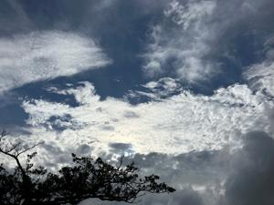
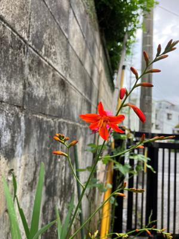

うるがいの話 ある日
最新: 宇宙定数（宇宙項）【うるがいの話 ある日】とは 一日だけのプログです
『うるがいの話』の最新一日だけのプログで、通信料が少なく経済的だ。カニの画像をクリックすると全ての日付が載る『うるがいの話』サイトを表示します
|
|
【うるがいの話】 うるがい(ｳﾙｶﾞｲ urugai)とは、『もずくがに』の名前でとても大きくなります。 |
|---|---|
|
|
【カミマヤーの話】 猫のことを方言でマヤーといいます。カミマヤー（kamimayaa）とは、神の猫のことです。 |
|
【たながぁの音楽】 たながぁ（ﾀﾅｶﾞｰ tanagaa）とは手長えびのことで、何種類かあり大きいのは車 エビぐらいになります。 |

|
【ぶながぁの話】 ぶながぁ(ﾌﾞﾅｶﾞｰ bunagaa)とは、赤い髪の毛、赤い身体、そして身長は１ｍ２０ｃｍ ぐらい、川の蟹を食べているの目撃された。場所は沖縄県国頭郡大宜味村のと ある村僕の隣近所に住んでいる爺さんから、聞いた話です。 |
|
|
【ギーマの話】 ギーマ(giima)とは、山原の里山に咲くスズランに似た、 花を付けます。実は食べられます、 気が付くと口の周りが紫になっています。 |
2023年07月02日 (日）宇宙定数（宇宙項）
15:04

『偉大なる失敗』マリオ・リヴィオ／著 ２９７頁より引用
あるとき、物理学者のルードヴィグ・シルバースタインがエディントンに歩み
一般相対性理論は今でも、多くの人々から史上もっとも巧妙な物理理論だと考
えられている。著名な物理学者のリチャード・ファインマンはかつて、「私は
いまだにどうやって彼がこの理論を思いついたのかわからない」と告白した。
・・・・・
アインシュタインは、一九二二年の京都講演で、学生や教員に対する即興のス
ピーチを行ない、アイデアを思いついたきっかけをこう表現している。「ベル
ンの特許庁で椅子に座っていたとき、突然ある考えがひらめいた。“自由落下
している人間は、自分自身の体重を感じないだろう”と。私はハッとした。こ
の単純な考えは、私の心に深く焼きついた。そして、私を重力理論へと駆り立
てたのだ」
アルベルト・アインシュタインが一般相対性理論の方程式に自ら宇宙項を導入
したことに対し「人生で最大の過ちだった」と言った（真実はいまだ不明のよ
うだ）。本の最後頃には、近年になって「宇宙項（宇宙定数）」が復活してい
る（ダークマターも絡む）と、天才達がアインシュタインの事を天才というの
だから、とても凄い人なのだろう。そのスゴイ人を京都で数日通訳をした高校
生（第一次南極越冬隊隊長、西堀榮三郎）がいたことを、ＮＨＫ制作番組のプ
ロジェクトＸ「南極越冬」の録画をみて知った。だから・・・・・

１０年以上も経っただろうか、庭に雑草と生えていた『ヒメヒオウギズイセン
』の綺麗な花が、咲いた。
１４時５９分 ビットコインの総資産 ￥１２、７５５（↑４２）